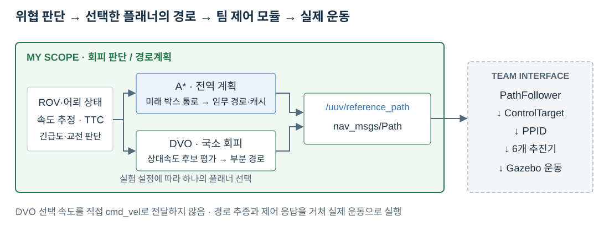

유도 특성을 반영한 미래 박스 통로
현재 3×3×3 m 박스와 예측 위치의 박스를 장애물로 사용합니다. 관측으로 PN/Pursuit 유도 특성을 추정해 미래 위치를 샘플링하고, 유도 모델을 알 수 없으면 현재 속도 방향으로 예측합니다.
- 통로 예측 시간
- 4.0 s
- 박스 배치 간격
- 약 1.5 m
- 미래 박스 상한
- 32개
- 박스 크기
- 3×3×3 m
시간·간격·개수는 서로 다른 제한입니다. 이를 곱해 고정된 48 m 통로로 해석하지 않았습니다.
UNDERWATER AUTONOMOUS SYSTEMS / PATH PLANNING / ROS 2
BlueROV2 임무 주행 중 이동 위협을 판단하고, A* 전역 경로계획과 DVO 국소 회피를 구현했습니다. 초기·최신 DVO를 동일한 24개 위협 조건으로 비교하고, 회피율이 높은 최신 DVO 결과를 중심으로 실제 경로·제어 연동과 남은 한계를 검증했습니다.
5명이 기능별 브랜치로 병렬 개발한 수중 무인체계 시뮬레이션에서 회피 판단과 경로계획 영역을 담당했습니다. ROV와 어뢰 상태를 입력받아 위협 상태와 TTC를 판단하고, A* 또는 DVO 플래너로 경로를 생성해 /uuv/reference_path로 전달했습니다.

INPUT · ROV / Torpedo Odometry → DataHub
OUTPUT · /uuv/reference_path
TEAM INTERFACE · PathFollower → PPID → 추진기 → Gazebo
어뢰 유도 제어, PPID 위치 제어와 추진기 제어는 팀원 담당이며 이 페이지에서는 제 모듈과의 인터페이스만 표시합니다.
A*는 어뢰가 앞으로 통과할 공간을 3D 박스 통로로 바꿔 전역 경로에서 제외했습니다. DVO는 현재 어뢰 박스와 추정 속도를 이용해 후보 ROV 속도별 미래 최근접 거리를 계산했습니다. 두 플래너가 같은 예측 통로를 사용하는 구조는 아닙니다.
현재 3×3×3 m 박스와 예측 위치의 박스를 장애물로 사용합니다. 관측으로 PN/Pursuit 유도 특성을 추정해 미래 위치를 샘플링하고, 유도 모델을 알 수 없으면 현재 속도 방향으로 예측합니다.
시간·간격·개수는 서로 다른 제한입니다. 이를 곱해 고정된 48 m 통로로 해석하지 않았습니다.
현재 어뢰 박스가 추정 속도로 움직인다고 가정하고, 각 ROV 속도 후보의 상대운동을 6초 동안 평가합니다. A*의 유도 예측 박스 통로를 그대로 입력받지는 않습니다.
계획상 여유는 ROV 반경·박스 외접 반경·margin의 합입니다. 실험 HIT 기준 1.0 m와 다른 값입니다.

NORMAL/AVOID는 유효하고 최신인 위협 관측을 기준으로 구분합니다. TTC는 Cruise, Approach, Break의 긴급도 판단에 사용합니다. 30 m 진입·33 m 해제는 교전 상태의 기준이며 NORMAL 복귀 조건이 아닙니다.
약 5 Hz 상태 갱신 사이의 상대운동을 이용해 구간 내 3D 최근접 거리를 계산했습니다. 한 틱의 거리만 확인해 빠르게 교차하는 위협을 놓치지 않도록 했습니다.
HIT: 구간 최근접 거리 ≤ 1.0 m · 계획 주기와 제어 주기는 별도
미래 3D 박스 통로를 피해 임무 목표까지 경로를 생성하고 캐시합니다. 유효한 경로는 유지하고, 목표 변경·이탈·충돌 등 경로가 무효해진 조건에서 재계획합니다.
충돌 가능한 속도 후보를 제외하고 국소 경로를 생성합니다. 매 갱신에서 새 상태로 판단하는 receding-horizon 방식이며, 이동 가능한 부분 경로도 출력합니다.

DVO 단독에서는 이동 가능한 후보가 있을 때 불필요한 정지 후보가 선택되지 않도록 수정했습니다. 목표 도달이나 이동 불가 상황에서 필요한 정지는 유지했습니다.
전체 rollout을 완성하지 못해도 이동 가능한 2점 이상의 경로를 출력했습니다. 유효한 회피 prefix가 정지로 바뀌지 않도록 했습니다.
동일 목표 heartbeat는 입력의 최신성만 갱신합니다. 좌표나 frame이 실제로 달라졌을 때만 새 임무로 처리해 경로·PID·교전 상태가 반복 초기화되지 않도록 했습니다.
PathFollower 연동에서 짧은 국소 경로의 끝을 최종 목표 도달로 오인하지 않도록 수정했습니다. 경로 끝점을 유지하고 다음 회피 경로를 이어 추종하도록 했습니다.
DVO의 선택 속도가 추진기로 직접 전달되는 것은 아닙니다. nav_msgs/Path → PathFollower 국소 waypoint → ControlTarget → PPID 위치·속도·yaw 제어 → 6개 추진기 → Gazebo 순서로 실제 운동이 만들어집니다. 계획 타이머는 5 Hz, 제어는 20 Hz이며 worker는 대기 중인 입력을 최신 상태로 교체합니다.
BlueROV2와 위협의 실제 기동 성능 차이가 결과를 지배하지 않도록 속도비를 보존하는 축척 조건을 사용했습니다. 기준 속도 20 kt를 ROV 3.0 m/s에 대응시키고, 같은 축척·초기 조건·유도 방식에서 초기 DVO와 최신 DVO를 비교했습니다.
20 kt ↔ 3.0 m/s
시간 축척
λ = σ × τ
4 × 2 × 3 = 버전별 24개 조건 · 초기·최신 합계 48개 DVO 실행
SimpleTracking은 mode 2, PNG는 mode 3입니다. HIT는 피격 판정이며 유효 실험에 포함합니다. 최종 AVOIDED는 어뢰 연료 소진까지 생존한 결과로, 교전 중 한 번의 스쳐 지나감을 뜻하지 않습니다.
초기 baseline과 최신 통합실험에서 DVO 실행을 각각 24개씩 분리했습니다. 경로·제어 연동 수정 전후 비교이며, 최종 성능 표는 회피율이 높은 최신 DVO 전체 배치만 사용합니다. 중간 파일럿을 합치거나 조건별로 더 좋은 실행을 골라 24개를 만들지 않았습니다.
초기·최신 DVO는 각각 같은 24개 조건을 실행했습니다. 최종 결과는 회피율이 높은 최신 DVO 전체 배치입니다. HIT도 유효 실험에 포함합니다.
초기 대비 최신 DVO에서 새로 회피한 조건은 3개, 반대로 피격된 조건은 2개입니다. 경로·제어 연동도 함께 수정했으므로 회피율 변화를 DVO 알고리즘 단독의 효과로 단정하지 않았습니다.


| 유도 방식 | 접근 방향 | DVO |
|---|---|---|
| SimpleTracking | 정면 | 3/3 · 1.09 m |
| SimpleTracking | 후방 | 3/3 · 1.85 m |
| SimpleTracking | 측면 | 3/3 · 1.19 m |
| SimpleTracking | 대각 | 2/3 · 1.45 m |
| PNG | 정면 | 0/3 · 0.88 m |
| PNG | 후방 | 1/3 · 0.99 m |
| PNG | 측면 | 2/3 · 1.09 m |
| PNG | 대각 | 1/3 · 0.76 m |
실제 완료된 계획 로그 기준: 호출당 시간 중앙값 1.243 ms, p95 2.921 ms. run당 호출 수 중앙값 412.5회입니다. 5 Hz 타이머가 항상 초당 5회 계획 완료를 보장하지는 않습니다.
각 조건 최종 실행 1회이며 통계적 유의성이나 반복 실험의 신뢰구간을 주장하지 않습니다. CSV 거리값은 반올림 표시입니다. HIT는 틱 사이 상대운동의 3D 최근접 거리 ≤ 1.0 m 판정으로, XY 투영만으로 다시 판정하지 않았습니다.
최신 DVO 중 4개 실행은 해당 계획·제어 로직과 실험 조건이 동일함을 검증한 v2 기록을 재사용했습니다. 나머지 파일럿 실행은 제외했습니다.
CSV와 검증 보고서에서 reference path 발행, PathFollower 목표 생성, 실제 추진기 출력과 ROV 이동이 연결됨을 확인했습니다. 경로가 비어 멈추거나 국소 끝점을 최종 목표로 오인하는 문제를 분리한 뒤, 남은 HIT를 실제 동역학과 위협 예측의 한계로 분석했습니다.
제공된 ROS 2 실험 보고서에서 선택한 최신 DVO 24개 모두 pipeline audit·native rosbag integrity 통과를 확인했습니다. 통합 코드의 Debug 회귀 테스트 14개도 통과했습니다. 수치·궤적은 ZIP의 CSV로 재집계했으며, native bag 자체는 ZIP에 포함되지 않아 여기서 재실행·재검사한 기록과 구분했습니다.
DVO는 현재 추정 속도를 유지한다고 가정합니다. 유도에 따라 휘어지는 미래 운동을 그대로 예측하지 않으며, 안전 후보가 없을 때의 least-bad 출력은 유효 경로라도 무충돌을 보장하지 않습니다.
계획 경로가 PathFollower와 PPID, 추진기를 거쳐 실행되므로 실제 가속·회전 응답은 후보 속도와 다릅니다. 경로 발행 성공만으로 회피 성공을 판단하지 않았습니다.
긴급 단계에서 횡방향 회피를 선호하도록 했지만, 교전 전체에 방향을 고정하고 한 번만 반전하는 episode-latched 상태기계까지 구현한 것은 아닙니다.
동일한 24개 조건을 비교했지만 경로·제어 연동도 함께 바뀌었습니다. 1개 조건의 순증가를 일반적인 성능 우위로 확대하지 않고, 최신 동일 코드의 A* 대조군이 없으므로 A*/DVO의 최신 우열도 단정하지 않았습니다.
ROS 타입과 시계를 코어에서 직접 사용하지 않고 상태와 시간을 입력받도록 분리했습니다.
부분 경로를 유효하게 출력하고, 국소 끝점을 임무 종료로 오인하지 않도록 PathFollower 연동을 수정했습니다.
현재·예측 박스 Marker를 CUBE_LIST 하나로 묶었습니다. 초기 구현에서 확인한 메시지 발행량 변화이며 최신 회피율 비교 지표는 아닙니다.
runs, plans, events, kinematics, controls, extended metrics의 6개 CSV로 결과를 수집했습니다. 입력 검증을 통과한 최종 배치만 결과 표와 차트를 자동 갱신하도록 구성했습니다.